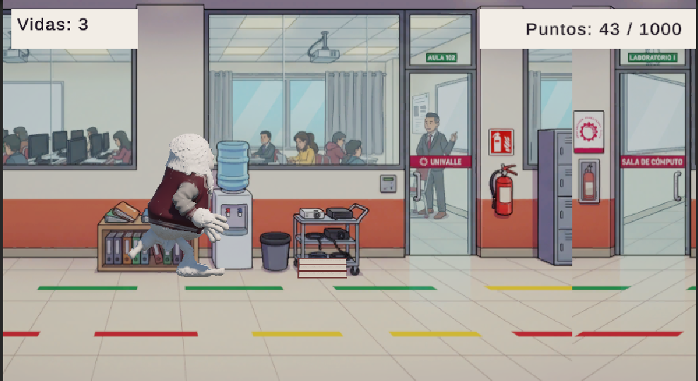
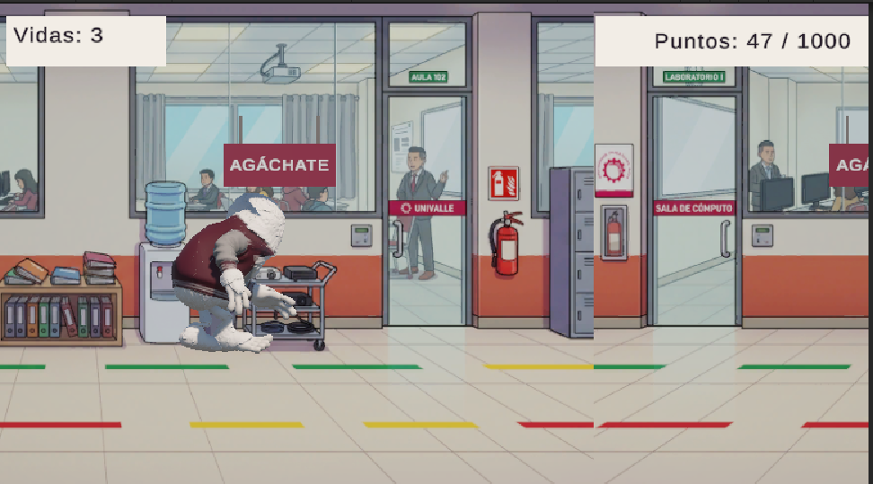
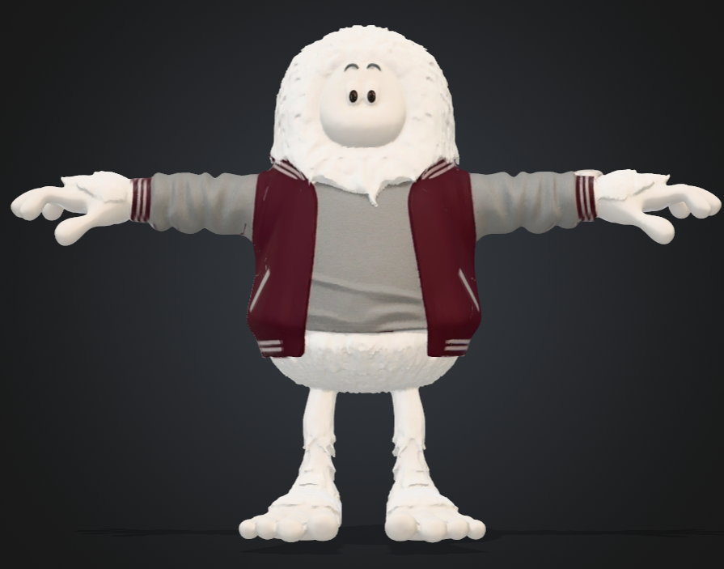
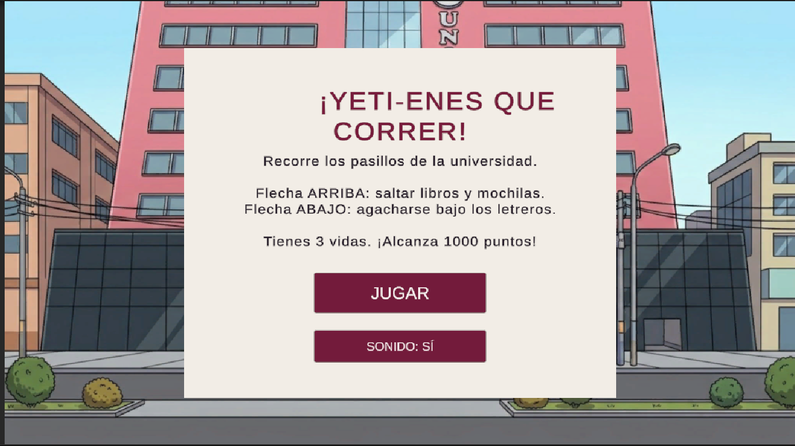

Saltar
Presiona Flecha Arriba cuando estés en el suelo para superar una pila de libros o una mochila.
ARCADE · ENDLESS RUNNER 3D
La defensa está por empezar. El campus tiene otros planes.
Ayuda a un Yeti universitario a llegar a tiempo a su defensa de Game Development. Salta libros y mochilas, esquiva letreros y conserva tus vidas mientras aumenta la velocidad.

01 / HISTORIA
Nuestro protagonista es un estudiante tranquilo, confiado y algo distraído. Al llegar al campus descubre que quedan pocos minutos para su defensa de Game Development: necesita llegar al laboratorio antes de que sea demasiado tarde.
Los pasillos se convierten en una carrera de reflejos. Mochilas olvidadas, pilas de libros y letreros suspendidos interrumpen su recorrido. Cada decisión cuenta y cada choque reduce sus oportunidades.
Alcanzar la meta representa llegar a tiempo a la defensa. Perder todas las vidas termina la carrera. La aparición aleatoria de obstáculos hace que cada intento sea diferente.


02 / PERSONAJE PRINCIPAL
Su pelaje blanco, su gran tamaño y su chaqueta guinda y gris lo distinguen entre los estudiantes del campus. Su apariencia es tranquila, pero llegar a tiempo requiere agilidad y concentración.
El personaje tiene un modelo 3D animado. Corre de forma continua, salta para superar obstáculos bajos y se agacha para pasar bajo los letreros. Al perder sus vidas, reproduce su animación de caída.
03 / MECÁNICAS Y CONTROLES
El recorrido avanza automáticamente. Tú decides cuándo saltar y cuándo agacharte.
Presiona Flecha Arriba cuando estés en el suelo para superar una pila de libros o una mochila.
Presiona Flecha Abajo para reducir tu altura temporalmente y pasar bajo los carteles.
Utiliza el ratón para iniciar la partida, volver a jugar y activar o desactivar el sonido.
Alcanza 1000 puntos para completar la meta.
Si las vidas llegan a cero, termina el recorrido. Puedes volver a intentarlo.
04 / EL JUEGO EN NÚMEROS
Reconoce los obstáculos y practica los controles.
Aumenta la velocidad y se reduce el tiempo entre apariciones.
Conserva al menos una vida hasta alcanzar la puntuación de victoria.
05 / JUGAR AHORA
La versión web está disponible en itch.io. Abre el juego y comienza una nueva carrera, sin instalar Unity ni descargar un ejecutable.
JUGAR AHORA EN ITCH.IO , abre en otra pestañaEsta versión utiliza teclado y no incluye controles táctiles para celular.

Usa el botón de pantalla completa para ampliar la vista. Si no escuchas audio, comprueba el botón de sonido y el volumen del navegador.